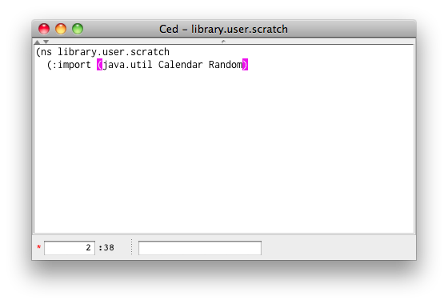

slix name: ced
Ced is a Clojure editor designed to work best in the Sevenri environment. Working together with other slixes Ced helps you write and compile your code, browse libraries, and develop slix quickly and interactively.
Ced window consists of two parts; the main text pane and a panel in the bottom. There is the divider with the tiny arrows in the top of the text pane. From left in the bottom panel there are the Line Number field, the Column Number field, and the Find field. There is also the modification indicator in the left most edge of the panel. It turns a red asterisk when you touch file and disappears when you save the file. The window title displays Ced instance name and the file name currently editing. When the mouse cursor is in the title area, hold down the ALT+META key. The full path name of the current file pops up. (Note: on Mac OS X the Option key is the ALT key.)

Ced has the following features.
Most of the standard mouse actions and key bindings in Java are available. In addition, there are Ced specific key bindings and edit actions.
Automatically indent lines. The way Ced indents lines is fairly close to the way Emacs in Clojure mode does.
Highlight matching parentheses, that is, when these character pairs, '(' and ')', '{' and '}', '[' and ']', are used and "match up", Ced displays those matching characters in different color.
Move the caret to the line specified in the Line Number field.
Search and highlight matching string as you type in the Find field.
Undo your edit actions up to the last save point, and redo undone actions.
The text pane can be divided in two vertically, so you can see and edit two different parts of the same file side by side.
When the caret is on or next to a Java class/interface name, open the JDK documentation page of the class/interface in the default system browser by pressing F1.
By pressing F2 load the file currently editing using the require function with the :reload flag. Pressing SHIFT+F2 compiles the file and the output files go into the directory .sevenri/classes.
Pressing F5 figures out the slix name from the file currently editing and open the slix.
Ced doesn't insert TAB character in file. When reading file, TAB character in the file is replaced with eight spaces. (You can, however, insert TAB character by pasting it from the system clipboard.)
This section describes Ced specific key bindings and edit operations.
ENTER
Insert a newline and indent.
TAB
Indent the current line and move the caret to the beginning of the line. When a region is selected, indent the lines in the selection.
META+]
When the caret is next to a highlighting parenthesis, move the caret to a matching parenthesis position.
SHIFT+META+]
When the caret is next to a highlighting parenthesis, move the caret to a matching parenthesis position and select the string between them.
META+F
Move the focus to the Find field. In the field, case sensitive search is performed as you type and matching string, if any, will be highlighted. Press ENTER ore META+G to search next match. Keep pressing ENTER or META+G lets the search continue from the beginning of file. Press TAB to move the focus back to the text pane and then move the caret to the beginning of highlighting string. Press ESC to cancel search and move the focus back to the text pane and the caret moves back to original position.
META+G When the focus is in the text pane or the Find field, move the caret to the beginning of next match of the string in the Find field.
META+L
Move the focus to the Line Number field. In the field, type line number and press ENTER to move the caret to the beginning of the line. Pressing ESC or TAB cancels the operation and move the focus back to the text pane.
META+N
When the text pane is divided, move the focus from the current pane to the other.
META+O
Open a Clojure file using the Open Sevenri File dialog box. The translations from slash to period and underscore to hyphen will be applied to the file path.
META+S
Save the file currently editing.
SHIFT+META+S
Save the file currently editing in a different name using the Save As Sevenri File dialog box. The .clj extension will be added to the file name automatically, and then the translations from period to slash and hyphen to underscore will be applied to the file path.
META+Z
Undo the last edit action. Keep pressing META+Z undoes the edit actions up to the last save point.
SHIFT+META+Z
Redo the last undone action. Keep pressing SHIFT+META+Z redoes the undone actions up to the last edit action.
F1
When the caret is on or next to a word, call API-browser with the word. A fully qualified Java class/interface name can also be identified as word (e.g. "javax.swing.text.html.HTML$Tag").
F2
Figure out lib name from the file currently editing and load the lib using the require function with the :reload flag.
SHIFT+F2
Figure out lib name from the file currently editing and aot-compile the lib using the compile function with *compile-path* set to .sevenri/classes.
F5
Figure out slix name from the file currently editing and open the slix.
When you open Ced from the Sevenri, Ced opens the default scratch file src/library/user/scratch.
In Ced use META+O to open a Clojure file.
ced Macro at The REPLYou can open Ced at the REPL using the ced macro. The macro can take a file path or a java.io.File and optional line number as arguments.
File path can be either in symbol or string. When it's a symbol, it doesn't need to be quoted and period to slash and hypen to underscore translations are applied. Then a lib file corresponding the symbol in the src directory is looked up. Try the followings at the REPL. To open the default scratch file:
(ced library.user.scratch)
To open the Sevenri's slix lib file and move to line 203:
(ced sevenri.slix 203)
When you want to open a slix lib file you can abbreviate slix. For example, this opens the core file of the slix repl.
(ced repl.core)
The symbol has to begin with slix only when you want to open a slix lib file whose name begins with sevenri. For example,
(ced slix.sevenri.lists)
When the path is in string, it should be an absolute path or a relative path from the current Sevenri directory. When the argument is a java.io.File, it's taken as is. Either way you don't need to add the .clj extension. When the specified file doesn't exist or no argument is given, Ced falls back to open the default scratch file.
One another argumnt type the ced macro can take is a var. When the metadata of the var has enough information regarding to the file associated with the var, the ced macro can open the file in Ced. For example, when you want to see how the Clojure's map function is implemented, type this at REPL.
(ced #'map)
The Clojure's core file is opened in Ced with the caret is set on the line where the map function is defined.